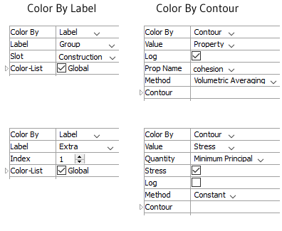

FLAC3D 中的绘图项
| 名称 | 说明 |
|---|---|
| 连接条件（Attach Conditions） | 当前连接条件的摘要。 |
| 梁（Beam） | 按标签或数值显示的梁信息 |
| 边界（Boundary） | 模型边界信息 |
| 锚索（Cable） | 按标签或数值显示的锚索信息 |
| 面（Face） | 网格单元面（全部） |
| 安全系数（Factor of Safety） | 在绘图图例中显示最近一次计算的安全系数 |
| 土工格栅（Geogrid） | 按标签或数值显示的土工格栅信息 |
| 网格点固定（Gp Fixity） | 网格点固定条件 |
| 接触面（Interface） | 接触面的位置、数值或标签信息 |
| 等值面（IsoSurface） | 以等值面显示的网格单元数值数据 |
| 衬砌（Liner） | 按标签或数值显示的衬砌信息 |
| 桩（Pile） | 按标签或数值显示的桩信息 |
| 剖面（Profile） | 沿空间中定义的一条线绘制网格属性的图表 |
| 壳（Shell） | 按标签或数值显示的壳信息 |
| 张量（网格单元）（Tensors (Zone)） | 应力或应变的网格单元张量数据 |
| 追踪颗粒（Tracked Particles） | 释放到流体流场中的颗粒的路径 |
| 矢量（结构单元）（Vectors (Structural Elements)） | 所选结构单元类型的矢量数据 |
| 矢量（网格单元）（Vectors (Zone)） | 所选网格单元数值的矢量数据 |
| 地下水位（Water Table） | 用于计算孔隙压力的地下水位位置 |
| 网格单元（Zone） | 按标签或数值显示的网格单元信息 |
| 网格单元分组曲面（Zone Group Surfaces） | 按分组的网格单元曲面 |
可视化 FLAC3D 模型对象
对于 FLAC3D 中的许多模型对象，绘图时首先要确定的是显示该项的标签（分组、附加变量、特性等）还是数值（加速度、力、速度等）。在后一种情况下，项的着色（等值线）会涉及一个 比例，使颜色的顺序具有意义。对于标签与数值的判断起决定作用的绘图项，绘图项属性按自上而下的方式依上下文设置：上方给定属性的设置将决定其下方出现哪些附加属性。这种行为通常仅限于所显示的前三到五个属性。
“从第一个属性向下派生”模式
当上下文属性出现时，它们会按特定顺序排列，从第一个属性（通常为“按…着色”或“类型”）向下派生。


图 1：网格单元绘图项的四种不同着色。请注意，在每一组中，出现在第二个位置与最后位置之间的属性各不相同，它们取决于所选的标签/数值。
按…着色 排在最前。它用于选择要显示“标签”还是“等值线”。
标签 或 数值 紧随其后出现，具体由 按…着色 的设置控制。该属性提供一个选择器，用于指定要显示哪一种标签或等值线。
接下来是修饰字段，视需要提供。某些选定的标签或数值需要进一步细分*；若如此，属性将动态出现在此位置。
颜色列表 或 等值线 将在上下文控件中最后出现。此处显示 颜色列表（color-list）（当选择“标签”时）或 等值线（contour）（当选择“等值线”时）的标准控件。
注意
*示例（取自上图，从左上角开始按顺时针方向）可能包括：
- 选择“标签”时，在下一个属性中选择“分组”。此时，将动态显示一个附加字段，用于选择哪一个（或任意）“槽位”。
- 选择“等值线”时，在下一个属性中选择“特性”。此时，将动态显示“对数”（对该值取以 10 为底的对数）、“特性名称”（要显示哪一个特性）和“方法”（从网格单元形心外推到网格点的值的方法）等附加字段。
- 选择“等值线”时，在下一个属性中选择“应力”。此时，将动态显示“分量”（要显示应力张量的哪个分量）、“应力”（是否将该张量按应力值处理）以及“对数”和“方法”（同上）等附加控件。
- 选择“标签”时，在下一个属性中选择“附加”。此时，将动态显示一个附加字段，用于指定所需附加变量的“索引”。
| 这些内容对您有帮助吗？… | FLAC3D © 2019, Itasca | 原文更新于 2020 年 10 月 8 日 |